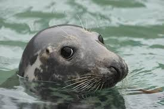
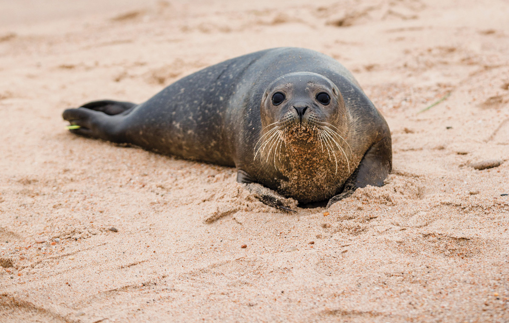
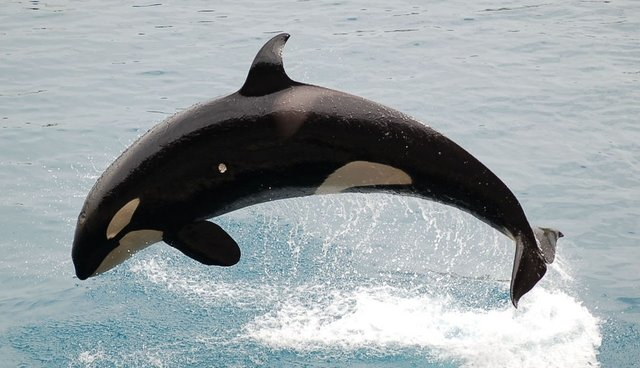
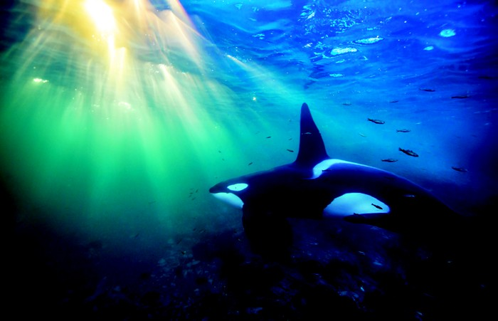
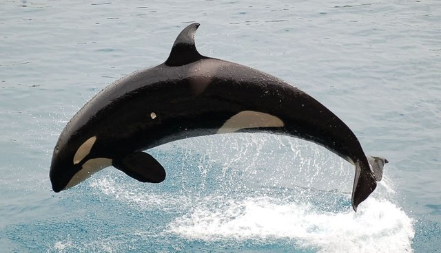
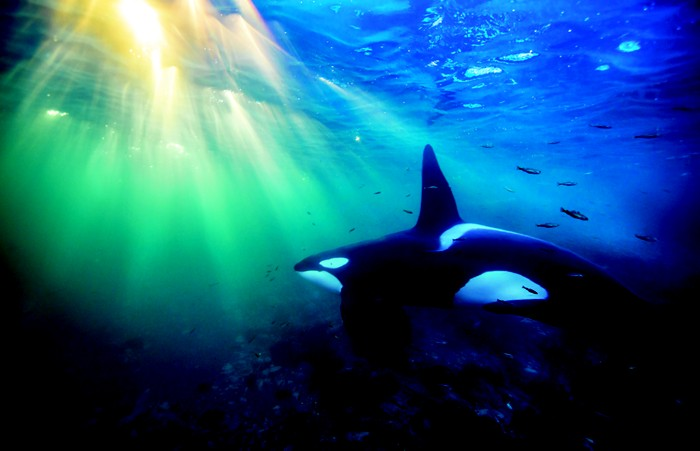
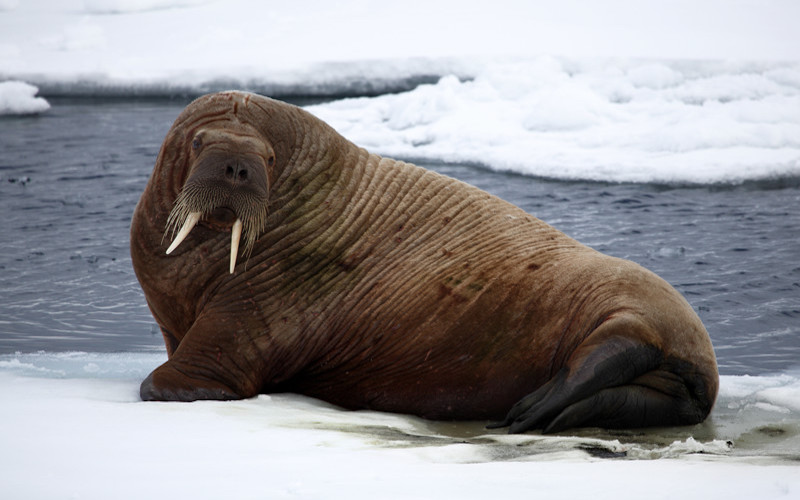
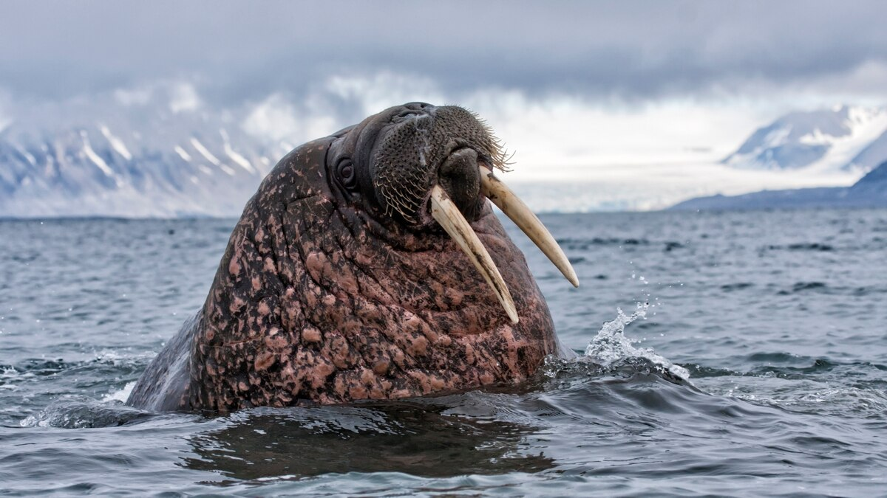

Choose an animal:
Seal
 
Pinnipeds,[a] commonly known as seals,[b] are a widely distributed and diverse clade of carnivorous, fin-footed, semiaquatic marine mammals. They comprise the extant families Odobenidae (whose only living member is the walrus), Otariidae (the eared seals: sea lions and fur seals), and Phocidae (the earless seals, or true seals). There are 33 extant species of pinnipeds, and more than 50 extinct species have been described from fossils. While seals were historically thought to have descended from two ancestral lines, molecular evidence supports them as a monophyletic lineage (descended from one ancestral line). Pinnipeds belong to the order Carnivora and their closest living relatives are believed to be bears and the superfamily of musteloids (weasels, raccoons, skunks, and red pandas), having diverged about 50 million years ago.
Orcas
 



The killer whale or orca (Orcinus orca) is a toothed whale belonging to the oceanic dolphin family, of which it is the largest member. Killer whales have a diverse diet, although individual populations often specialize in particular types of prey. Some feed exclusively on fish, while others hunt marine mammals such as seals and other species of dolphin. They have been known to attack baleen whale calves, and even adult whales. Killer whales are apex predators, as no animal preys on them. A cosmopolitan species, they can be found in each of the world's oceans in a variety of marine environments, from Arctic and Antarctic regions to tropical seas, absent only from the Baltic and Black seas, and some areas of the Arctic Ocean.
Walrus
 
The walrus (Odobenus rosmarus) is a large flippered marine mammal with a discontinuous distribution about the North Pole in the Arctic Ocean and subarctic seas of the Northern Hemisphere. The walrus is the only living species in the family Odobenidae and genus Odobenus. This species is subdivided into two subspecies:[2] the Atlantic walrus (O. r. rosmarus) which lives in the Atlantic Ocean and the Pacific walrus (O. r. divergens) which lives in the Pacific Ocean. Adult walrus are characterised by prominent tusks and whiskers, and their considerable bulk: adult males in the Pacific can weigh more than 2,000 kg (4,400 lb)[3] and, among pinnipeds, are exceeded in size only by the two species of elephant seals.[4] Walruses live mostly in shallow waters above the continental shelves, spending significant amounts of their lives on the sea ice looking for benthic bivalve mollusks to eat. Walruses are relatively long-lived, social animals, and they are considered to be a "keystone species" in the Arctic marine regions.